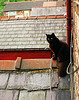
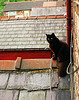

QuickSlide
QuickSlide is a basic popup image viewer. Adding it to a page is easy:
-
Include the quickslide.js file at the bottom of your
page:
<script src="quickslide.js"></script>
-
Add rel="quickslide" to any links you want converted to
popups:
<a href="images/buslane_b.jpg" rel="quickslide">
<img src="images/buslane_t.jpg">Bus Lane
</a>
Make sure these links point to images, otherwise QuickSlide will get
confused.
Call the QuickSlide() function, either in your existing code, or in a <script> tag after one above.
That’s it! QuickSlide is designed to be an unobtrusive, progressive
enhancement to existing pages: it won’t interfere with other
JavaScript widgets or libraries, and your page won’t break if for
some reaon the code fails to load. It will also work on any links added to
a page dynamically via JavaScript.
As an AMD module
QuickSlide is AMD-compatible, so you can use it with loaders like RequireJS:
// some_module.js
define(["quickslide"], function (QS) {
QS();
});
Configuration
There are a few options you can specify to control the behaviour of the
popups. They are set by passing an object as the parameter to the
QuickSlide function:
<script src="quickslide.js"></script>
<script>
QuickSlide({
max_width: 800,
max_height: 600,
use_dimmer: true,
absolute_position: true,
show_caption: true,
navigation: true,
auto_fit: false,
auto_detect: true,
no_wait: true
});
</script>
An explanation of the options:
max_width, max_height: dimensions are in pixels.
Specifying either will constrain the popup image to that size,
maintaining aspect ratio. You can specify both. No default.use_dimmer: set to true to also create a
fixed-position <div> in addition to the popup box
itself. It has an ID of #quickslide-dimmer, is
fixed-position and covers the whole window. Default value for this
option is false.absolute_position: set to true to make the
popup scroll with the document. Default is false, which
means the popup stays in the centre of the browser window even when you
scroll up or down (i.e. it is displayed with position: fixed
style).show_caption: set to true to use the source
link’s title attribute as a caption for the popup
image. You can use HTML in the title and it will be inserted as normal on
the caption (see the ‘Gig’ image below for an example). If
true but no title attribute is found, the
image’s filename will be used instead. Default is
false. The caption is a <div> with a class
of quickslide-caption.navigation: set to true to show Previous
and Next links in the popup, and to allow use of left and right arrow
keys to navigate through all detected images. Default is
true.
auto_fit: set this to false to allow popups
to be larger than the browser window. Default is true.auto_detect: set to true to have QuickSlide
attempt to automatically detect links to images, even ones without a
rel="quickslide" attribute. Only works for links whose URLs
end in .jp[e]g, .png or .gif, and may
have unintended side-effects, so use with caution. Default is
false.no_wait: set to true to initialise
QuickSlide as soon as the browser has downloaded it. This is useful if if
you are adding quickslide.js to your page after the DOM
onload event has already fired (e.g. via insertion of a
<script> tag). Default is false, meaning
QuickSlide waits for the onload event before initialising.
This option will be ignored if you load quickslide.js from the
document <head>, since in those instances there won't
yet be a document body to append the necessary elements (popup box and
dimmer) to.
You can (and should) use CSS to customise the appearance of the popup
and associated elements – see the demo
CSS file for more examples.
Download
- quickslide.zip (7.6KB) – contains
a minified and a normal version of the code, a small loading spinner
image, and a sample CSS file (the same one
as used on this page).
- quickslide-min.js (4.7KB) – just
the minified JavaScript code.
QuickSlide is also on
GitHub; the repo contains some additional files that let QuickSlide
work as a Chrome extension, although this is only experimental at present.
Example
Click thumbnails to show larger image; click large image or press
Esc to hide it again.
contact: quickslide@andyf.me
· site: andyf.me
 Bus Lane
Bus Lane
 Cathedral
Cathedral
 Euston
Euston
 Gig
Gig
 Hedge
Hedge
 Cat
Cat
 Link with no
Link with no  Totoro
Cat on Roof
Broken Link
Test
Totoro
Cat on Roof
Broken Link
Test
{kind=link}